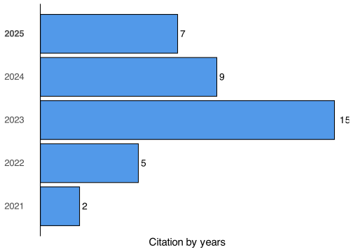

| H-Index | 2 |
| Sum of Times Cited | 32 |
| Publications | 2 |
Publications
Last update on: 2024-09-15
Working Papers & Papers Under Review
1| Exploring the Dynamics of Microbial Communities under combined Heat and Water Stress across different compartment
2024| Corentin Maslard, Mustapha Arkoun, Christophe Salon, Marion Prudent, Jingjing Peng
2| From roots to leaves: a comprehensive metabolomic and transcriptomic insight into soybean stress adaptation
2024| Corentin Maslard, Mustapha Arkoun, Lun Jing, Marion Prudent
3| Ectopic expression of the grape hexose transporter VvHT5 restores STP13-deficiency in Arabidopsis and promotes fungal resistance to Botrytis cinerea
2024| Benoit Monnereau, Cécile Gaillard, Corentin Maslard, Pierre-Antoine Noceto, Anne Cantereau, Pierre Coutos-Thévenot and Sylvain La Camera
Peer-reviewed journal articles
1| Root architecture characterization in relation to biomass allocation and biological nitrogen fixation in a collection of European soybean genotypes
2021| Corentin Maslard, Mustapha Arkoun, Christophe Salon and Marion Prudent OCL - Oilseeds and fats, Crops and Lipids. 28, p.48. (3 Citations)
2| Pentadecaibins I−V: 15-Residue Peptaibols Produced by a Marine-Derived Trichoderma sp. of the Harzianum Clade
2021| Anne-Isaline van Bohemen, Nicolas Ruiz, Aurore Zalouk-Vergnoux, Aurore Michaud, Thibaut Robiou du Pont, Irina Druzhinina, Lea Atanasova, Soizic Prado, Bernard Bodo, Laurence Meslet-Cladiere, Bastien Cochereau, Franck Bastide, Corentin Maslard, Muriel Marchi, Thomas Guillemette and Yves François Pouchus Journal of Natural Products. 84(4). (26 Citations)
Magazine Publications
Theses
1| Opening the black box of soybean-microbial community interaction under heat and water stresses
2021| Corentin, Maslard
Learn about these metrics
- Citations are the number of other articles citing this article, calculated by Crossref. Find more information about Crossref citation counts
- The Altmetric Attention Score is a quantitative measure of the attention that a research article has received online. Clicking on the donut icon will load a page at altmetric.com with additional details about the score and the social media presence for the given article. Find more information on the Altmetric Attention Score and how the score is calculated.
